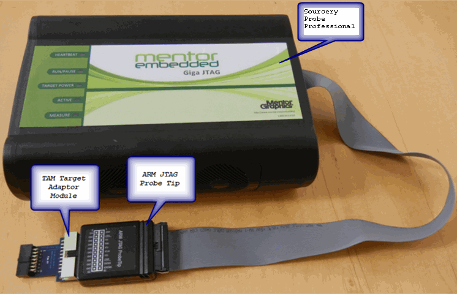

The probe uses advanced emulation technology to provide control of and visibility into your target system. Combined with a host debugger, the probe speeds the debugging process by letting you interactively control and examine the state of your target system.
Sourcery Probe Professional is composed of two parts:
The Ethernet probe
The probe is shown in Figure 1‑1. It provides visibility into and control of your target system using a JTAG interface. It connects to your host computer through a 10BaseT, 100BaseT, or 1000BaseT Ethernet link.
A target system JTAG probe tip
A probe tip, shown in Figure 1‑1, is designed to provide a physical and electrical interface to the target system processor that you want to gain visibility into.
Figure 1‑1. Sourcery Probe Professional with ARM JTAG Probe Tip